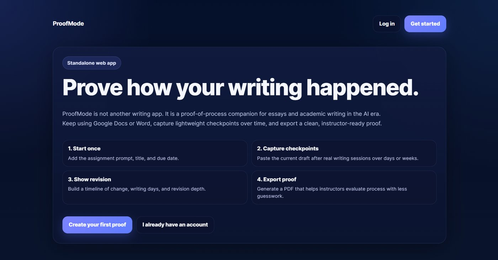

← Back to the 3D site Text version 2D site
Case study · Mar 2026 – present
ProofMode: prove the process, don’t guess the author
Students keep writing in Google Docs or Word and save lightweight checkpoints in ProofMode as they go. ProofMode turns those checkpoints into a PDF evidence summary with an integrity stamp, so instructors can see how a paper actually came together instead of trusting an AI detector’s guess.
- Recognition2nd Place, UMW Eagle Egg Pitch
- StatusLive at app.proofmode.co
- My roleDesigned and built it, from idea to live product
- StackNext.js 14 · FastAPI · PostgreSQL · Docker

The problem
AI-detection tools look at a finished essay and guess whether it “looks like” AI. That’s an arms race: detectors are easy to fool with light editing, and when they’re wrong, honest students are the ones who get accused. A guess after the fact is a weak foundation for academic integrity decisions.
The idea: proof of process
AI detection
Analyzes the final text after it’s submitted. Produces a probability. Can be spoofed, and gives an honest student no way to show their work.
ProofMode
Records the writing process as it happens: timestamped checkpoints, revision metrics and reflection notes, saved in a record the student chooses to share.
How it works
- Start once. Add the assignment prompt, title and due date. Templates cover common humanities and business assignments.
- Capture checkpoints. After real writing sessions, over days or weeks, paste in the current draft. Each checkpoint is timestamped with character-change metrics, and students can add short reflection notes explaining their choices.
- Show revision. ProofMode builds a timeline of change: writing days, how the draft grew and how deeply it was revised.
- Export the proof. The server generates a PDF evidence summary with up to five recent checkpoints, reflection notes, revision metrics and an integrity stamp that helps instructors evaluate the process with less guesswork.
- Share on the student’s terms. A revocable link (
/s/{token}) gives the instructor access, and the student can turn it off at any time.
Architecture
If the diagram is wider than your screen, scroll it sideways. Keyboard users can focus the diagram and use the left and right arrow keys. The same flow is explained in text below.
Architecture in text
- Browser. Next.js 14 and TypeScript provide the interface, with Tiptap for rich text. The browser talks to FastAPI using JWT cookies and CSRF tokens.
- API. FastAPI handles authentication, drafts and sharing, and adds security headers.
- Database. FastAPI encrypts essay text with Fernet and stores it in PostgreSQL through SQLAlchemy.
- PDF export. ReportLab generates a PDF evidence summary with up to five recent checkpoints, reflection notes, revision metrics and an integrity stamp.
- Hosting. The web and API run as Docker services on Render, with managed PostgreSQL.
Security and privacy by design
Student writing is personal, so security was a requirement from the start, not an add-on:
| Passwords | Hashed with Argon2, a modern memory-hard algorithm. |
|---|---|
| Sessions | Signed JWTs in cookies and CSRF tokens for requests that change data. |
| Essay text | Fernet field-level encryption for stored essay text. |
| Sharing | Revocable, token-based links: the student decides who sees the proof, and for how long. |
| Web hardening | Security-header middleware in the API. |
Results
- 2nd Place at the UMW Eagle Egg Pitch Competition.
- Shipped as a live product at app.proofmode.co, running in Docker on Render.
What it shows
ProofMode reframes an AI problem instead of fighting it head-on: rather than building a better detector, it changes what gets measured. It also covers the full path from idea to production: product thinking, a full-stack build, security for sensitive data, and deployment.